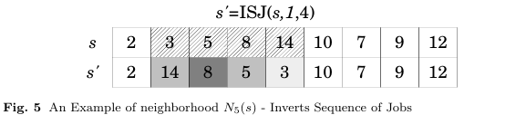

The neighborhood purpose is to reverse a sub-sequence of jobs L. To perform this process, it is necessary to receive as a parameter the allocations sequence S, an index i indicating the beginning of L on S and a parameter k indicating the size of the sub-sequence L.
After setting the sub-sequence L, all jobs are reversed on sequence. Due to the fact it is possible to generate invalid sequences to reverse a sequence of jobs that have precedence relationship with each other, it is necessary to apply the topological ordering on S to sort jobs that are not in the correct sequence.
Before performing the offset is important to establish the limits, identifying the index pid of the last or first job of p allocated in S and check in accordance with the direction dir if it is possible apply the offset k. The offset to the left is invalid when pid − k < 0, the offset to the right becomes invalid when pid + k ≥ |S|. In both cases of invalid movement, the size of k is decremented until it finds a possible size k or k = 0. Only after checking the validity of offset, all jobs of p are displaced.
Figure 5 shows the movement made by this neighborhood. In this example, the method receives as parameter a position 1 and the size 4, thus this sub-sequence is reversed. All jobs pertaining to each project p are colored on different intensity of gray.
